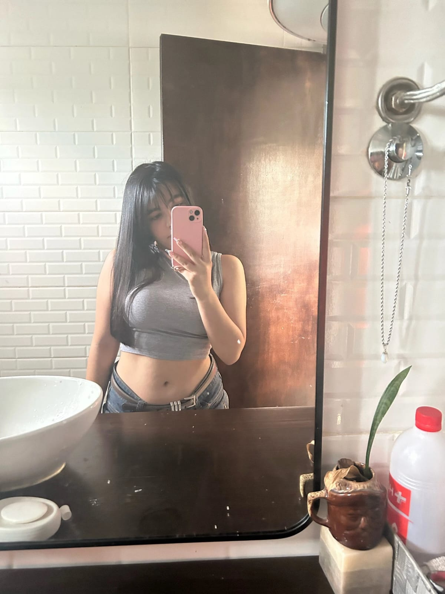
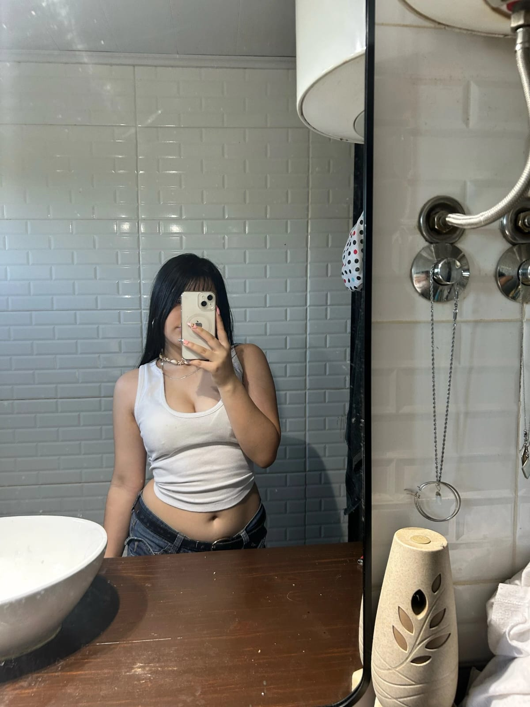

A veces la vida nos sorprende de formas inesperadas, poniendo en nuestro camino a personas que, sin previo aviso, terminan convirtiéndose en piezas fundamentales de nuestro día a día. Y eso es exactamente lo que ha sucedido contigo.
No hace tanto que nos conocemos, pero la verdad es que el tiempo no siempre es el mejor indicador de la profundidad de una amistad. En este corto pero significativo tiempo, me he dado cuenta de que eres una persona increíble, de esas que brillan con luz propia...
¡Feliz San Valentín, pedazo de caca! 🎉💖
 